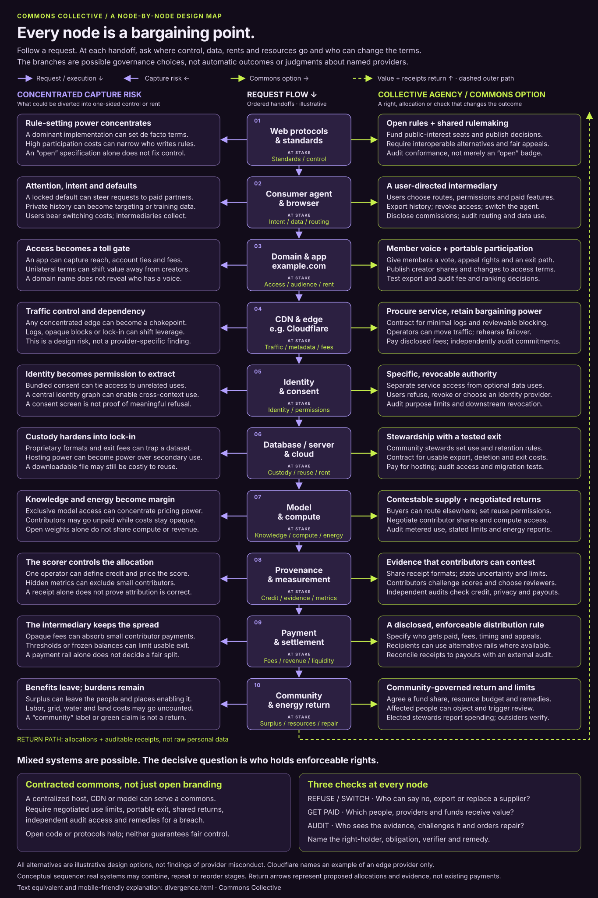

Ten handoffs. A choice at each one.

- ↓ Central solid arrows: request / execution order
- ← Left branches: possible concentrated capture
- → Right branches: possible commons governance
- ↑ Dashed outer arrow: value + receipts return, not raw personal data
Branches are choices, not two simultaneous traffic pipes. The return path is a proposed allocation and accountability loop, not a claim that payments already happen at these stages. Receipts document a claim; they do not by themselves establish correct attribution.
Mixed systems can serve a commons.
A centralized host, CDN, payment service or model can serve collectively governed goals under a governance contract. Public or cooperative ownership is another option, not a prerequisite for every component.
Open branding is not an enforceable condition. An open protocol, downloadable dataset or open model can still leave control, compute, money and exit costs concentrated.
For each proposed condition, name the right-holder, obligated party, observable evidence, independent verifier and remedy for failure. Treat an untested promise as a proposal, not an achieved safeguard.
Ask three questions at every node.
- Who can refuse or switch? Can users, members or their stewards decline an optional use, export usable data, replace a supplier or challenge a decision? What costs or limits remain?
- Who gets paid? Name the providers, workers, creators, contributors, stewards and community funds receiving each share. Specify fees, timing and allocation rules.
- Who audits? Give a named, sufficiently independent reviewer access to evidence, with privacy protections, a challenge process and a route to repair.
The test: a right that can be exercised, a distribution that can be reconciled, and a breach that has consequences.
What tips the scales toward a collective commons?
An alternative gives someone another option. A credible collective mandate lets an accountable organization move purchases, authorized supply or approvals; enforceable terms bind that power to members’ purposes; independent evidence makes performance contestable; and funded stewardship keeps exit, representation and repair usable. The proposed shift is from isolated choice to organized bargaining with consequences.
Interventions and diagnostics, not established thresholds. The mechanisms below are proposals to test, not empirically proven tipping points, vendor assessments or guarantees of legal enforceability. A named instrument still needs authorized parties, applicable-law review, a funded verifier and a usable remedy. More members, more data or more decentralization do not automatically create leverage. A centralized supplier can serve a commons under accountable terms; a decentralized network can still concentrate ownership, rulemaking or rent.
Existing conceptual context: this guide applies the research’s distinction between buyer power, authorized supplier power and public-good representation, its non-binding agreement architecture, separation of identity, reputation and validation, and community and energy bargaining. Its tests follow the existing falsifiable research approach, not a new set of findings.
-
Web protocols & standards
- Countervailing power
- Funded public-interest participation plus procurement demand. Buyers that condition purchases on independently implementable standards give maintainers and underrepresented users leverage beyond an invitation to a working group. Maintained alternatives make ignoring their requirements costlier.
- Who organizes / acts
- A coalition of public-interest implementers, accessibility advocates and participating buyers funds delegates and maintenance. Delegates report to represented constituencies, not just the largest sponsors.
- Enforceable instrument
- A standards-governance charter assigns voting, conflict and appeal rules; procurement agreements require published interoperability tests and fund independent implementations. Specify how a failed requirement affects acceptance or renewal.
- Observable proof / decision test
- Can a separately maintained implementation interoperate without private vendor permission? Can a minority constituency challenge a rule and obtain a recorded decision? If buyers waive these requirements whenever inconvenient, the collective mandate is not credible.
- Remaining capture risk
- A dominant firm may control the reference implementation, test suite or paid participation. A formally open process can still depend on one sponsor’s engineering budget.
-
Consumer agent & browser
- Countervailing power
- Pooled purchasing and a credible routing exit. A member-authorized operator that can actually redirect a service budget gives suppliers a reason to negotiate. Membership counts or a choice menu do not do this if defaults, history or workflows cannot move.
- Who organizes / acts
- A consumer purchasing cooperative elects and can recall its procurement representatives. A staffed service team supports members during migration; purchasing authority does not include automatic permission to sell or train on their data.
- Enforceable instrument
- A scoped purchasing mandate and service agreement prohibit undisclosed steering, disclose commissions, separate optional data uses and require usable exports. Budget migration support and specify remedies for routing or permission breaches.
- Observable proof / decision test
- With member authorization, route a bounded task to an alternative and record quality, continuity and total switching cost. Test whether a member vote can stop an unfavorable renewal and whether refusal of optional data use is respected.
- Remaining capture risk
- The “member-serving” agent can become a new gatekeeper, steering toward its own commissions or making exit from the cooperative harder than exit from a supplier.
-
Domain & application: example.com
- Countervailing power
- Organized users and authorized contributors with portable relationships. Their ability to move participation and future contributions makes unilateral fee or access changes negotiable. Supplier voice matters only if it can delay, reject or change a consequential decision.
- Who organizes / acts
- Member and contributor chambers negotiate with the app operator; an affected-party council represents interests not captured by paying accounts. Representatives need recall, conflict disclosure and compensated participation.
- Enforceable instrument
- A member charter and operator agreement reserve specified decisions for constituency approval, bind revenue-share rules and require permission-respecting account export. Define appeals and remedies when the operator bypasses an approval.
- Observable proof / decision test
- Rehearse a proposed fee or ranking change: can the affected chamber reject it and require revision? Test migration of authorized records and reconcile creator statements to the approved split, rather than merely counting votes or downloads.
- Remaining capture risk
- Network effects can strand members even with export. Large contributors may dominate representation; moving an audience must not expose other people’s data or compel them to move.
-
CDN & edge
- Countervailing power
- Aggregated procurement backed by operational independence. Common requirements and a funded failover path make renewal negotiable: operators can buy protection and performance without surrendering all leverage over logs, blocking and price. Cloudflare remains an illustrative provider, not the subject of a finding.
- Who organizes / acts
- A federation of site operators pools procurement expertise and funds an operations team. Member-appointed reviewers oversee security and privacy; only authorized operators move live traffic.
- Enforceable instrument
- A service agreement sets log limits, block-review procedures, audit access, exit assistance and breach remedies. Maintain operator control of necessary domains and credentials and a budget for an alternative delivery path.
- Observable proof / decision test
- Rehearse failover without sacrificing agreed security or availability. Compare actual migration costs and logs with contract promises, and test a blocking appeal. If the alternative cannot meet the service need, exit remains nominal.
- Remaining capture risk
- Alternatives can share upstream dependencies or lack affordable protection. The procurement federation itself may favor a supplier through opaque discounts or inaccessible technical decisions.
-
Identity & consent
- Countervailing power
- Collective negotiation of terms while retaining individual refusal. A service coalition can condition procurement on purpose limits and compatible identity options. That changes bargaining only if a representative cannot trade away someone’s authorization to secure a cheaper deal.
- Who organizes / acts
- Members appoint a rights steward with authority to pause disputed processing, while affected nonmembers have an objection route. Service operators and identity providers must implement, not merely display, the agreed permissions.
- Enforceable instrument
- A scoped delegation, purpose schedule and downstream-use agreement separate necessary service processing from optional uses. Specify revocation handling, alternative authentication, deletion limits and remedies; do not promise to undo every past use.
- Observable proof / decision test
- Test refusal, identity-provider switching and prospective revocation across recipients. Does unrelated service still work? Can the steward pause a disputed use despite commercial pressure, and does the audit expose unresolved downstream copies?
- Remaining capture risk
- A collective consent broker can become a new surveillance hub. Majority approval cannot resolve absent third-party authority, and historical disclosure or model use may not be reversible.
-
Database, server & cloud
- Countervailing power
- Steward-controlled custody and a funded migration capability. A usable substitute makes cloud renewal contestable; a file-download button does not. Shared technical staff can reduce the cost of enforcing use limits and moving a working service.
- Who organizes / acts
- Authorized community data stewards set retention and reuse boundaries. A pooled operations team maintains schema documentation, controlled backups, keys and restoration expertise under those mandates.
- Enforceable instrument
- A hosting and processing agreement specifies usable formats, access limits, deletion evidence, migration assistance, exit charges and remedies. Ring-fence an exit budget instead of spending all funds on current hosting.
- Observable proof / decision test
- Restore a permission-safe representative workload elsewhere, including its access rules and dependencies. Record time, full cost and functionality; verify a prohibited secondary-use request is denied and a deletion request receives qualified evidence.
- Remaining capture risk
- Specialized managed services, hidden dependencies and scarce staff can recreate lock-in. The steward can also overreach: holding infrastructure or keys does not confer universal rights over its contents.
-
Model & compute
- Countervailing power
- Pooled demand, or scarce accountable supply that buyers actually need. Buyers can negotiate through contestable procurement; authorized contributors may bargain through dependable updates, coverage or verification that substitutes cannot match. A large corpus or open weights alone establishes neither advantage.
- Who organizes / acts
- Keep the purchasing cooperative and contributor association’s mandates distinct. Authorized stewards define offered services; independent evaluators compare models and supply alternatives; staff budget compute and contribution costs.
- Enforceable instrument
- Use separate procurement and bounded supply agreements with purpose limits, quality commitments, contributor compensation, compute access, energy reporting and remedies. Coordinate only within verified authority and applicable legal constraints.
- Observable proof / decision test
- Compare the offered service with available alternatives on the same task and full-cost basis. Seek buyer renewal on acceptable terms and test model switching. Reject the scarcity claim if substitutes perform as well or contributors cannot be sustainably paid.
- Remaining capture risk
- Compute bottlenecks can overwhelm supply-side leverage; buyers can substitute away. A bargaining club may manufacture exclusivity, enclose public knowledge or pass uncompensated work to contributors.
-
Provenance, measurement & validation
- Countervailing power
- Independent, contestable evidence with consequences for selection and payment. Contributors gain leverage when they can challenge a score and buyers act on validated findings. More receipts do not help if the operator alone defines truth or can bury adverse results.
- Who organizes / acts
- A buyer-and-contributor review body commissions qualified independent validators. A separate appeals function hears challenges; an explicitly funded evidence commons maintains methods and privacy-preserving records.
- Enforceable instrument
- Validation contracts and a governance charter separate outcome-independent reviewer fees from commercial ranking, require conflict disclosure and protect publication of adverse findings. Specify evidence access, correction deadlines and consequences for unsupported claims.
- Observable proof / decision test
- Can a second qualified reviewer reproduce a bounded result from permitted evidence? Seed a known error in a rehearsal: does correction reach the ranking and any affected payout? Separate identity, authority, observed performance and uncertainty.
- Remaining capture risk
- Validators can form a cartel or optimize easy metrics; wealthy participants can buy more evidence. A signature authenticates a claim, not its truth, and public provenance can expose sensitive relationships.
-
Payment & settlement
- Countervailing power
- Aggregated payment volume plus member control of the allocation rule. Shared procurement may negotiate processing costs, but only protected accounting and recipient voice prevent those savings becoming another intermediary’s margin. The ability to replace a processor must preserve what recipients are owed.
- Who organizes / acts
- A member-accountable treasury works with appropriately authorized payment providers. Recipient representatives approve distribution rules; independent financial reviewers are separate from staff calculating and executing payouts.
- Enforceable instrument
- A settlement agreement specifies the waterfall, fee changes, segregated accounting, payout timing, failed-transfer liabilities and dispute remedies. Define processor replacement and legally appropriate safeguarding arrangements before accepting funds.
- Observable proof / decision test
- Trace a bounded transaction from receipt through deductions to confirmed recipient delivery. Rehearse a failed transfer and processor exit: the unpaid liability must remain visible, recoverable and subject to remedy, not become a success-shaped receipt.
- Remaining capture risk
- Banking access, compliance checks or frozen balances can still constrain exit. Treasury insiders may alter fees or distributions; a transparent ledger cannot by itself prevent missing funds or insolvency.
-
Community & energy return
- Countervailing power
- Affected-party organization linked to consequential resource or purchasing decisions. Communities have more than an advisory voice when authorized decision-makers condition commitments on agreed limits and returns. Negotiate before dependencies and sunk costs make refusal impractical.
- Who organizes / acts
- Residents, workers and affected nonmembers choose accountable representatives. Relevant purchasers, public bodies and resource operators participate within their actual authority; independent technical advisers are funded without sponsor veto over findings.
- Enforceable instrument
- A community-benefit covenant tied to agreements the parties can actually bind specifies a fund share, absolute resource budgets, disclosure, review and pause or repair triggers. Protect community oversight funding and do not exchange away individual rights.
- Observable proof / decision test
- Compare independently checked energy and water use with agreed budgets, including location, timing and who bears costs. Can an affected-party objection trigger a contractual remedy? Reconcile fund payments to community-approved spending, not publicity claims.
- Remaining capture risk
- Local elites can capture benefits while burdens move elsewhere. Efficiency can coexist with rising total demand; a community payment does not cancel privacy, labor or environmental harm.
A practical go/no-go question: can the represented people authorize a consequential choice, carry it out without disproportionate penalty, inspect independent evidence and obtain a funded remedy? Rehearse refusal, switching and a failed obligation, not just a successful purchase. If leverage or sustainable stewardship is missing, redesign the arrangement or fund an existing public-interest institution rather than treating “commons” branding as proof.
The complete text equivalent
The same ten stages in request order, with the asset at stake, the possible diversion, the commons alternative and concrete accountability questions. All conditions below are proposed design commitments, not statements about an existing service or legal guarantees.
-
Web protocols & standards
At stake: standards and rule-setting control.
Concentrated capture risk
A dominant implementation can set de facto terms. High participation costs can narrow who writes the rules. An “open” specification does not, by itself, distribute control.
Collective agency / commons option
Fund public-interest participation, publish decisions, require interoperable alternatives and provide fair appeals. Evaluate conformance rather than accepting an “open” badge.
Rights, returns and audit
Refuse/switch: implementers and users can choose compatible implementations. Paid: funded participation and maintenance have disclosed budgets. Audit: an independent reviewer checks conformance, representation and the appeal process.
-
Consumer agent & browser
At stake: intent, personal data and request routing.
Concentrated capture risk
A locked default can steer requests toward paid partners. Private history can become targeting or training data. Users bear switching costs while intermediaries collect commissions.
Collective agency / commons option
Let users choose routes, permissions and paid features; export history; revoke access; and replace the agent. Disclose commissions and inspect routing and data use.
Rights, returns and audit
Refuse/switch: users decline optional uses and move to another agent with a usable export. Paid: service fees and referral commissions are visible. Audit: an independent reviewer tests defaults, routing records and permission enforcement.
-
Domain & application: example.com
At stake: access, audience relationships and platform rent.
Concentrated capture risk
An application can capture reach, account ties and fees. Unilateral terms can shift value away from creators. A domain name does not reveal who has a voice.
Collective agency / commons option
Give members a vote, appeal rights and a practical exit path. Publish creator shares and changes to access terms. Test account exports and audit fee and ranking decisions.
Rights, returns and audit
Refuse/switch: members challenge terms or leave with portable records. Paid: creators and app operators receive disclosed shares. Audit: member-appointed independent reviewers inspect allocations, ranking rules and usable export.
-
CDN & edge: Cloudflare as an illustrative provider
At stake: traffic control, metadata and infrastructure fees.
Concentrated capture risk
Any concentrated edge can become a chokepoint. Logs, opaque blocking or lock-in can shift bargaining power. This is a generic design risk, not a finding about Cloudflare.
Collective agency / commons option
Procure a service without surrendering governance. Contract for minimal logs and reviewable blocking. Retain the ability to move traffic and rehearse failover.
Rights, returns and audit
Refuse/switch: authorized operators can reroute traffic and challenge blocks under agreed procedures. Paid: edge providers receive disclosed service fees. Audit: an independent reviewer verifies logs, commitments, invoices and failover tests.
-
Identity & consent
At stake: identity linkage and authority to use data.
Concentrated capture risk
Bundled consent can tie access to unrelated uses. A central identity graph can enable cross-context use. Displaying a consent screen does not prove that refusal is meaningful.
Collective agency / commons option
Separate service access from optional data uses. Make permission specific and revocable. Allow users to refuse, revoke or choose a different identity provider; verify purpose limits downstream.
Rights, returns and audit
Refuse/switch: users can decline optional uses without losing unrelated access and choose compatible identity services. Paid: disclose identity-service fees; do not treat payment as blanket consent. Audit: privacy reviewers test purpose limits and downstream revocation.
-
Database, server & cloud
At stake: data custody, reuse rights and hosting rent.
Concentrated capture risk
Proprietary formats and exit fees can trap a dataset. Hosting power can become power over secondary use. Even a downloadable file may remain costly or impractical to reuse.
Collective agency / commons option
Community stewards set use and retention rules. Contract for usable exports, deletion and predictable exit costs. Pay for hosting while keeping custody and reuse decisions accountable.
Rights, returns and audit
Refuse/switch: authorized stewards can reject secondary use and migrate under tested procedures. Paid: hosting and stewardship fees are specified. Audit: an independent reviewer checks access records, deletion evidence and migration tests.
-
Model & compute
At stake: knowledge, compute access, energy use and model revenue.
Concentrated capture risk
Exclusive model access can concentrate pricing power. Contributors may go unpaid while costs remain opaque. Open weights alone do not share compute or revenue.
Collective agency / commons option
Make supply contestable: buyers can route to alternatives and set reuse permissions. Negotiate contributor shares and shared compute access. Report metered use, limitations and energy consumption.
Rights, returns and audit
Refuse/switch: buyers can replace models; contributors have specified reuse choices before use. Paid: contracts name compute providers and eligible contributor shares. Audit: independent reviewers inspect use, payout and energy evidence, including estimation limits.
-
Provenance & measurement
At stake: credit, evidence, scoring power and allocation metrics.
Concentrated capture risk
One operator can define credit and price the score. Hidden metrics can exclude small contributors. A receipt alone does not prove that attribution is correct.
Collective agency / commons option
Use shared receipt formats; disclose uncertainty and limits. Let contributors contest scores and choose reviewers. Independent checks examine credit, privacy and resulting payouts.
Rights, returns and audit
Refuse/switch: contributors can challenge a score and seek an alternative reviewer. Paid: contributor allocations and measurement-service fees are distinct and visible. Audit: independent reviewers access sufficient evidence without unnecessary personal-data disclosure.
-
Payment & settlement
At stake: fees, revenue shares and access to usable balances.
Concentrated capture risk
Opaque fees can absorb small contributor payments. Thresholds or frozen balances can make exit impractical. A payment rail does not, by itself, determine a fair split.
Collective agency / commons option
Specify an enforceable distribution rule: recipients, fees, timing and appeals. Offer alternative rails where available. Reconcile receipts with actual payouts through an external audit.
Rights, returns and audit
Refuse/switch: recipients can challenge settlement and choose eligible alternative rails, with constraints disclosed. Paid: creators, workers, providers and funds have named shares. Audit: an external financial reviewer reconciles allocations, deductions and transfers.
-
Community & energy return
At stake: surplus, labor, energy, water, land and repair.
Concentrated capture risk
Benefits can leave the people and places enabling a system while labor, grid, water and land costs go uncounted. A “community” label or green claim is not an actual return.
Collective agency / commons option
Agree a community-governed fund share, resource budget and remedies. Give affected people a way to object and trigger review. Elected stewards publish spending while outside reviewers verify it.
Rights, returns and audit
Refuse/switch: affected people can trigger review and agreed limits or stop conditions. Paid: named local beneficiaries, workers and community funds receive agreed returns. Audit: independent financial and resource reviewers check spending, burdens and repairs.
Close the loop: return value allocations and auditable receipts to the people and institutions entitled to them at earlier stages. Minimize personal data in that evidence. An open interface, a receipt or a benefit promise only becomes useful bargaining power when someone can exercise a right, verify performance and obtain a remedy.